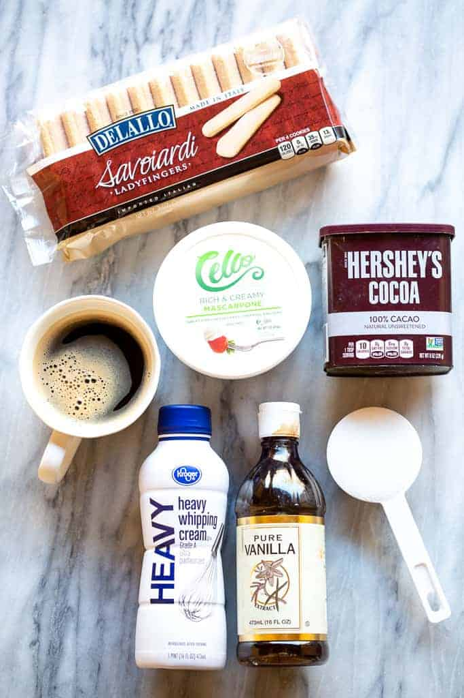

Tiramisu Cake Recipe

Ingredients:
- Ladyfingers: I buy them, but you could make them from scratch.
- Mascarpone: it wouldn’t be true tiramisu without mascarpone, but if you absolutely must, you could substitute cream cheese.
- Coffee: I use espresso
- Heavy Whipped cream
- Granulated Sugar
- Vanilla extract: or substitute imitation vanilla
- Cocoa powder: for dusting on top
Instructions:
- Mix creamy filling. Beat the mascarpone, cream, sugar, and vanilla together until stiff peaks.
- Dip lady fingers. Add the espresso and liqueur (if using) to a shallow bowl and dip the lady fingers on both sides (don’t let them soak–just a quick dip!)
- Layer mascarpone. Smooth a layer of the mascarpone/whipped cream mixture on top of the lady fingers.
- Repeat. Add another layer of lady fingers (dipped in coffee and liqueur) and another layer of cheese mixture. Dust with cocoa powder.

Make Ahead and Freezing Instructions:
Tiramisu is even better when made in advance, allowing the flavors to blend! It will keep in the refrigerator for 2 to 3 days.
To freeze, make completely, but don’t dust with cocoa powder. Cover tightly with plastic wrap and then tinfoil and freeze for up to 3 months. Thaw in the refrigerator overnight and dust with cocoa powder a few hours before serving.
Example Video:
Preparation time: 10 minutes
Total time: 10 minutes
If you like this recipe can rate here!